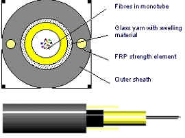
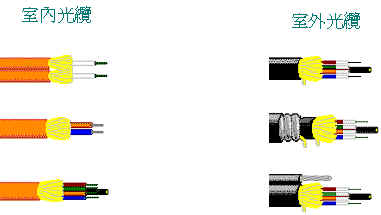

1966 - 美籍華人高錕及Georgo.A.Hockham根據介質波導理論共同提出光纖通訊的概念.
1970 - 美國康寧公司首次研發出級射率光纖,同年貝爾實驗室研發出發光器,正式拉開光纖通訊的序幕.
1972 - 原材質,制棒,抽絲的技術不斷提升,衰減系數由原有的20dB/km降至4dB/km.
1976 - 美國西屋電氣公司在亞特蘭大成功進行世界第一個以45Mbit/s傳輸110km的光纖通訊網路的實驗.
Today - 光纖通訊由原有的45Mbit/s提升至目前的40Gbit/s.
| 優點 | 缺點 |
|---|---|
| 高頻寬,通訊量大
衰減小,傳輸距離遠 信號串音小,傳輸質量高 抗電磁干擾,保密性高 光纖尺寸小,重量輕, 便於敷設及搬運原料 資訊充裕 |
光纖彎曲半徑不宜過小 光纖終端處理不易 分路及藕合操作繁瑣 |
玻璃光纖-玻璃核心及玻璃纖衣.
(光纖的玻璃是非常純的二氧化矽或溶解石英,再參雜其他化學原料 以達到所須的折射率,如鍺或磷增加折射率,硼減少折射率).
膠套矽光纖-玻璃核心及塑膠纖衣.
塑膠光纖-塑膠核心及塑膠纖衣.
級射率多模(Step-Index multimode).
漸變折射率多模(graded Index multimode).
單模(Singlemode).
級射率多模光纖是最簡單的型式,核心直徑由10~970μm都有,包含玻璃,膠套矽光纖,塑膠光纖結構,雖然級射率光纖在高頻寬及低損耗上不是最有效,但是最廣範被使用的光纖. 級射率多模光纖最大的缺點是因光纖不同模態的路徑長度變化造成的模間色散. 級射率多模光纖的模間色散為15~30ns/km
漸變折射率多模光纖是減少模間色散的另一種方式,核心有無數中心層玻璃,類似樹木的年輪,由中心軸核心向外每一連續層有較低的折射率. 漸變折射率多模光纖的模間色散為1ns/km或更少
另一種減少模間色散的方式是減少核心的直徑,直到光纖僅能有效地傳送一個模態,單模光纖有一個非常小的核心直徑僅5~10μm,標準的纖衣直徑為125 μ m.
加強工件是加機械強度至光纖,在施工期間及之後,支使張力及壓力應用到光纜,使光纖不受到傷害,主要的加強工件如下:
．Kevlar芳族聚硫安氨纖維.
．鋼鐵.
．玻璃纖維環氧樹脂棒(FRP).
披覆類似電線隔離,提供保護免於磨損,油氣,酸,鹼,溶劑等等影響選擇披覆的材料,依據不同環境影響所要求的抵抗程度及價格而定.
